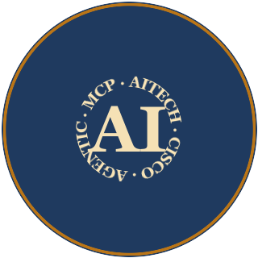

A people-first leader who builds with AI.
Cisco Technical Consulting Engineer. Project Lead on Cisco's EasyBEMS Gen AI Enforcer. Cisco AI Technical Practitioner (AITECH). Independent builder of Model Context Protocol (MCP) servers across .NET, Node.js, and Python. Dale Carnegie Skills for Success graduate and people-first leader with two decades of leading teams across industries.

I'm a Cisco Technical Consulting Engineer and Cisco AI Technical Practitioner (AITECH), currently serving as Project Lead on the EasyBEMS Gen AI Enforcer — a production Generative AI platform partnered with Cisco Technical Leadership. Across two decades of leading teams in fast-paced operational environments, the through-line of my career has stayed the same: the most leveraged thing I can do is help the people around me succeed.
I build Model Context Protocol (MCP) servers in C# / .NET, Node.js, and Python, and I ship them end-to-end using AI-augmented development. AI is how I scale what one engineer can deliver; mentorship is how I scale what an entire team can deliver. I treat both as core to the work — find the lever, then pull it.
Based in South Carolina. Graduate of Tri-County Technical College (National Honors Society) and Dale Carnegie's Skills for Success program, where I was selected as the first Remote Graduate Assistant in company history.
Two Decades of Leading
My leadership story started in 2009 behind a Papa John's counter as Head Delivery Driver — scheduling teams via labor matrix, training new hires, and resolving conflicts during rush. From there I was a floating Cell Leader at Reliable Automatic Sprinkler, a Store Manager at a Greenville thrift store, and now Project Lead on a production GenAI platform at Cisco. Whether the team is six delivery drivers or six Senior Engineers, the job of a lead is the same. At Cisco that's looked like initiating cross-technology troubleshooting forums, mentoring multiple engineers transitioning to TAC from CxA, hosting the CX Week People Leader's Q&A, presenting to Directors at the Collaboration Innovation Forum, and maintaining 100% CSAT across multiple consecutive quarters.
Skills for Success
I completed Dale Carnegie's Skills for Success course and was selected as the first Remote Graduate Assistant in company history — translating an in-person leadership development model into a remote-first format during the COVID era. The program reinforced what every leadership role I'd held had already taught me: that the act of helping another person find their footing is its own kind of expertise. I've stayed connected as a graduate assistant ever since.
At the Table
For fifteen-plus years I've also run weekly tabletop games as a Dungeon Master — four to seven players, ongoing campaigns, real time, no script. It's the same work as everything else I do: facilitate strong personalities, design systems that survive contact with humans, and improvise under pressure to make sure everyone at the table has the best possible experience. Hobby and career feed each other, and the same instincts apply to both.
AI / Agentic
LLM integration (OpenAI, Gemini, Sherlock/Watson) · Model Context Protocol (MCP) server design · Agentic workflows · Prompt engineering · RAG-style content pipelines
AI-Augmented Development
Windsurf / Cascade (daily) · Claude Code, Cursor, GitHub Copilot, Codex (familiar) · Skill / rule / workflow authoring for repeatable agentic outcomes
Languages & Stacks
C# / .NET 9 · Node.js / TypeScript · Python · PowerShell · HTML / CSS · REST / WebSocket integrations
Engineering
Git / GitHub · Docker (Cisco HDS / ECP node deployments) · SSH / SCP deployment automation · Backend log analysis: Kibana, Wireshark, HAR/Fiddler, CUCM trace logs · Agile / Jira
Leadership & Communication
Cross-functional mentoring · Project leadership · Technical writing · Stakeholder communication · Public speaking · Conflict resolution · 100% CSAT across multiple consecutive quarters · Dale Carnegie Skills for Success Graduate Assistant
Builder, author, and contributor on multiple Model Context Protocol (MCP) projects — each shipped end-to-end using Windsurf-driven AI-augmented development.
Kenshi MCP Server
Built from scratch · C# / .NET 9
A custom Model Context Protocol server designed and built ground-up to make a 13-year-old game AI-moddable through any MCP client. Wraps the OpenConstructionSet SDK to expose gamedata parsing, mod authoring, and load-order management as MCP tools — turning a complex modding workflow into a conversation with an LLM.
Foundry VTT Multi-Client MCP Bridge
Authored · Phase 1 alpha fork
A multi-client fork of the foundry-mcp-bridge module that lifts the original's GM-only gate, allowing multiple Windsurf clients — a Game Master and their players — to connect to a single Foundry VTT instance simultaneously, each through their own local MCP server. Comes with a per-player onboarding workflow so a table of players can all leverage agentic tooling at once.
Foundry VTT MCP Server — Tooling Extensions
Contributed
Substantial new tooling contributed on top of an existing upstream MCP server, expanding it into a 38+ tool surface covering multi-system actor / journal / scene / combat orchestration over WebSocket. The expanded toolset powers an entire agentic content pipeline for tabletop game prep.
Windsurf / Cascade Agent Authoring Framework
Personal agent infrastructure
A 40+ skill, 14-rule, 12-workflow agent authoring framework powering an agentic content pipeline that scrapes source material, transforms it via LLM, and ships HTML journals and Foundry VTT modules to a remote Windows VM via SSH/SCP. The framework is the substrate behind all my other shipping work.
Cisco AI Technical Practitioner (AITECH)
Cisco · 2026
Associate of Business Administration
Tri-County Technical College · Pendleton, SC · National Honors Society
Dale Carnegie Skills for Success
First remote Graduate Assistant in company history